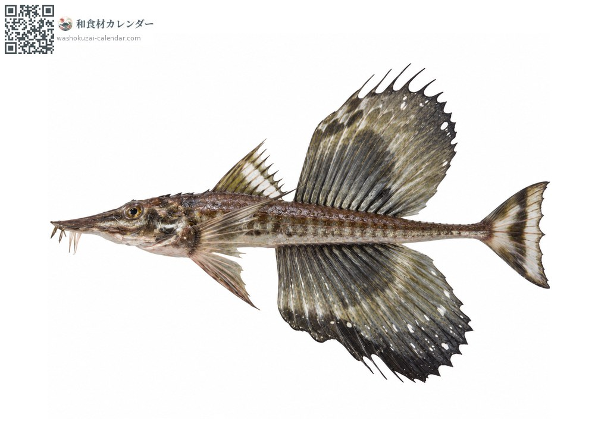
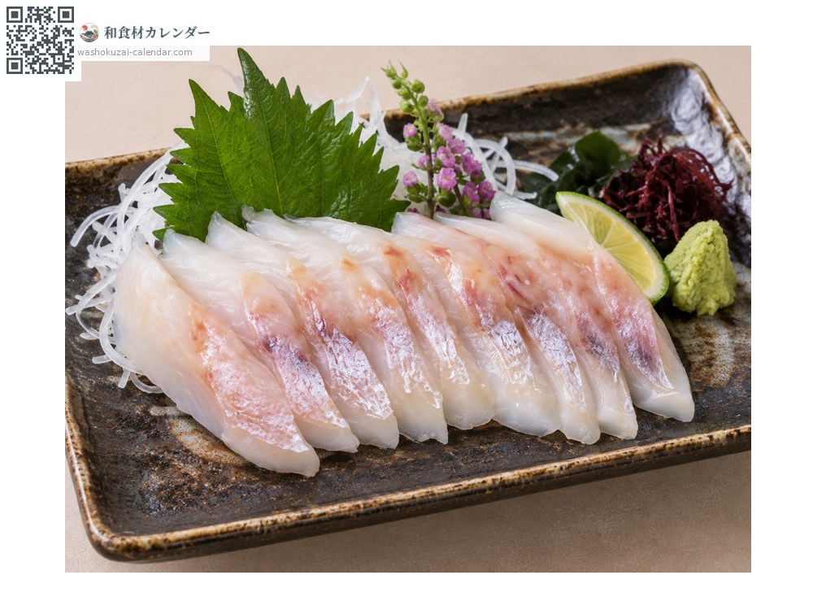
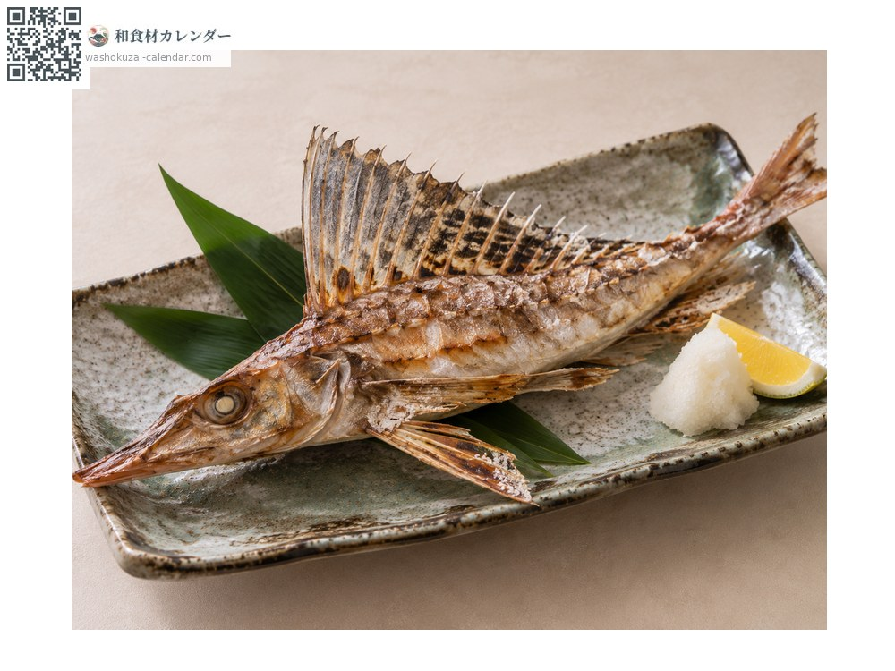
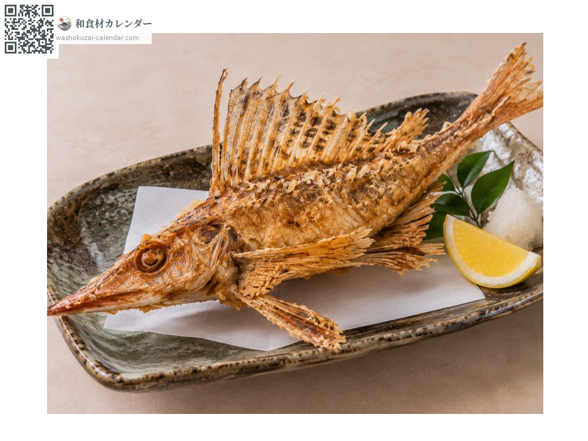

อาหารทะเล
ปลาฮักกากุ (ปลาเกราะครีบใบเรือ)
ハッカク はっかく
อร่อยที่สุดในเดือน ม.ค., ก.พ., พ.ย., ธ.ค.

ช่วงที่อร่อยที่สุด
ม.ค.
ก.พ.
มี.ค.
เม.ย.
พ.ค.
มิ.ย.
ก.ค.
ส.ค.
ก.ย.
ต.ค.
พ.ย.
ธ.ค.
ช่วงอร่อยที่สุดมีจำหน่าย
วิธีปรุง

ซาชิมิ
มันเยอะและหวาน หนังลวกน้ำร้อนแล้วกินได้

ย่างเกลือ
ย่างทั้งหนังที่แข็งเหมือนเกราะ เป็นเมนูประจำฮอกไกโด

คาราอาเกะ
ทอดจนกินได้ทั้งกระดูก หอมอร่อย
วิธีเลือก
ลำตัวแข็งเป็นเหลี่ยม ครีบหลังสมบูรณ์ ตาใส
วิธีเก็บรักษา
ควักไส้แล้วแช่เย็น ใช้ภายใน 2 วัน
แหล่งผลิตหลัก
เกร็ดน่ารู้
ชื่อทางการคือโทกุบิเระ เพราะหน้าตัดดูเป็นแปดเหลี่ยมจึงเรียกว่าฮักกากุ แปลว่าแปดมุม ตัวผู้มีครีบหลังและครีบก้นใหญ่ ราคาสูงกว่าตัวเมีย
วัตถุดิบที่อร่อยที่สุดในช่วงเดียวกัน
 ปลาซาบะ
ปลาซาบะ ปลาบุริ (ปลาหางเหลือง)
ปลาบุริ (ปลาหางเหลือง) ปลาทูน่าครีบน้ำเงิน
ปลาทูน่าครีบน้ำเงิน ปลากระโทง
ปลากระโทง ปลาเรนโกได (ปลาทรายแดงหลังเหลือง)
ปลาเรนโกได (ปลาทรายแดงหลังเหลือง) ปลาทรายแดงเส้นทอง
ปลาทรายแดงเส้นทอง ปลาทาคาโนฮาได (ปลาหางจุด)
ปลาทาคาโนฮาได (ปลาหางจุด) ปลากุเระ (ปลาเมจินะ)
ปลากุเระ (ปลาเมจินะ)